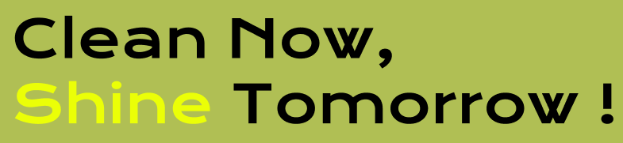
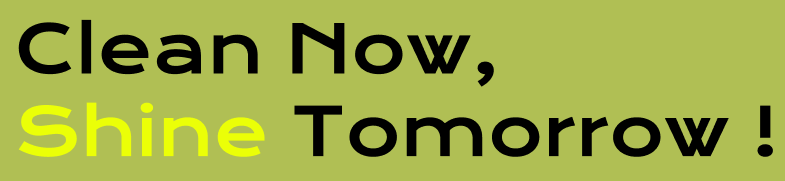
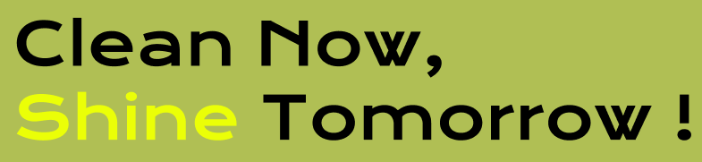
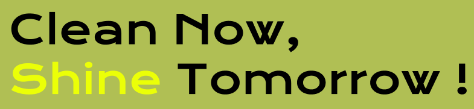
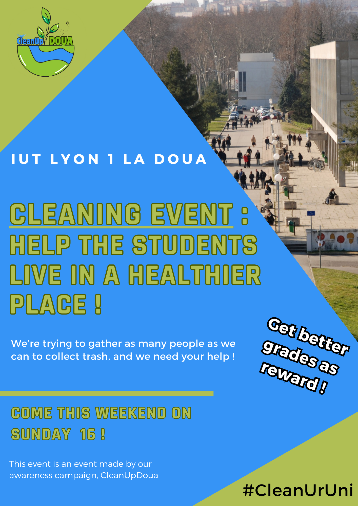

Information About US
Our campaign, CleanUpDoua is a campaing that aim to help students to be able to learn new things in a better and healthier place. We want to clean the buildings and the roads around the campus, and to do that we need YOUR help ! By having good habits we can reduce our waste, for example being mindful in the bathroom or not throwing away cigarettes on the ground can make a huge difference. We want to spread these habits to everyone and any help is welcome !

Events
Twice per year, we do events around the campus to clean more efficiently, we're trying to gather every students that volunteer for our cause and then we collect as much waste as we can, cleaning the place where you study yourself can make you feel better and more involved in your university activities. The Institute supports our cause and give bonus points to students who come to help us. Come make the campus a better place !
